Trong hơn ba thập kỷ, hành trình của Aman đồng nghĩa với việc kiến tạo một triết lý chăm sóc sức khỏe hướng đến sự trường thọ, mà ở đó, tính cốt lõi dựa vào “tâm linh” và “bản thân”. Tại 20 quốc gia trên toàn cầu, với phạm vi bao quát và đẳng cấp thế giới, triết lý trường thọ của Aman nhằm mục đích giúp phục hồi tâm-thân-trí và mang đến cho du khách cảm giác sảng khoái cao độ.
Aman đang tiếp tục phát huy di sản của mình với một kế hoạch đầy cảm hứng về các sáng kiến sức khỏe khẳng định lợi ích chữa bệnh của các phương pháp cổ xưa, kết hợp khoa học hiện đại và năng lượng vĩ đại của thiên nhiên. Năm 2026, Aman vẫn sẽ cung cấp chương trình nghỉ dưỡng độc quyền với Đại sứ Sức khỏe Toàn cầu (Global Wellness Ambassador) – Maria Sharapova, một trong những tay vợt nữ nổi tiếng nhất lịch sử quần vợt thế giới; và Đại sứ Toàn cầu kiêm Cố vấn Sức khỏe (Global Ambassador and Wellness Advisor) – Novak Djokovic, ngôi sao quần vợt lừng danh thế giới.
Maria Sharapova và Novak Djokovic đảm nhận vai trò Đại sứ của mình như những nhà giám tuyển Retreat (Ambassador Curated Retreat). Tại Amanzoe Hy Lạp, du khách được mời bắt đầu mỗi ngày mới như một nhà vô địch thông qua chương trình Building Mental Resilience kéo dài nửa ngày, được thiết kế để nâng cao sức bền cả về thể chất và tinh thần bằng một loạt các buổi học độc đáo do chính Maria phụ trách. Trong khi đó, với mối quan hệ hợp tác kéo dài nhiều năm, Novak Djokovic sẽ giúp các vị khách của Aman sống tốt hơn và lâu hơn thông qua Longevity Pathways, bắt đầu với Detoxification Programme, hiện có sẵn tại bảy khu nghỉ dưỡng Aman bao gồm Amanpuri, Amanbagh, Amangiri, Aman Tokyo, Aman New York, Amanyara và Aman Nai Lert Bangkok.
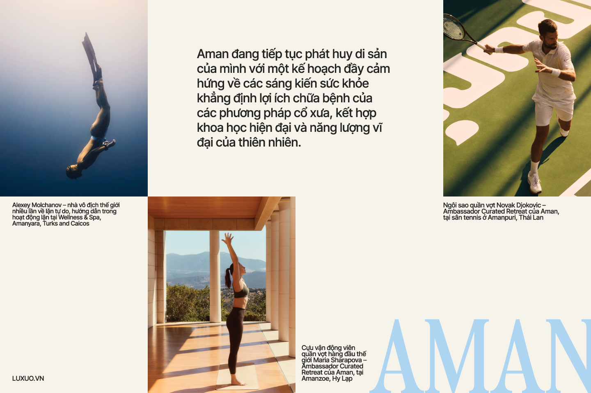
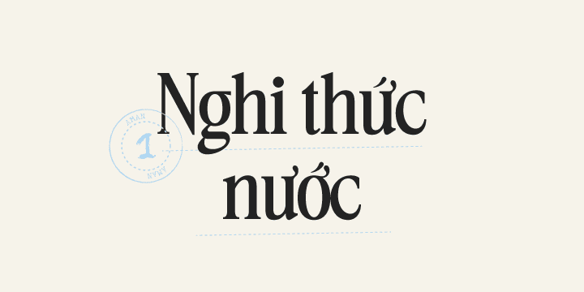
Amanyara, Turks & Caicos
Năm 2026 đánh dấu mốc kỷ niệm 20 năm của Amanyara tại quần đảo Turks & Caicos, một lãnh thổ hải ngoại của Vương quốc Anh. Amanyara sẽ tiếp tục hợp tác với các chuyên gia thỉnh giảng hàng đầu thế giới, mang đến những trải nghiệm chăm sóc sức khỏe có tính thay đổi hiệu quả, bao gồm trị liệu cơ thể, hiệu suất thể chất và chánh niệm. Từ ngày 10 đến ngày 14 tháng 6 năm 2026, một khóa nghỉ dưỡng chữa lành mới đầy thú vị gọi là Depth of Breathing Discovery, sẽ được dẫn dắt bởi nhà vô địch lặn tự do Alexey Molchanov và huấn luyện viên chăm sóc sức khỏe toàn diện Bea Minguez.
Cũng mới triển khai trong năm nay, chương trình Padel của khu nghỉ dưỡng đã được mở rộng, bên cạnh việc giới thiệu ba sân tập mới, Padel Legends Retreat – khóa huấn luyện chuyên nghiệp đầu tiên dành cho Amanyara đang dự kiến tổ chức (với nhiều thông tin chi tiết hơn sẽ được công bố khi thích hợp). Trong khi đó, du khách có thể tiếp tục nâng cao quá trình rèn luyện thể thao của mình với Legends Programme, một loạt cơ sở chăm sóc sức khỏe hoạt động quanh năm với sự cố vấn của các vận động viên chuyên nghiệp từng đoạt giải thưởng trên toàn cầu.
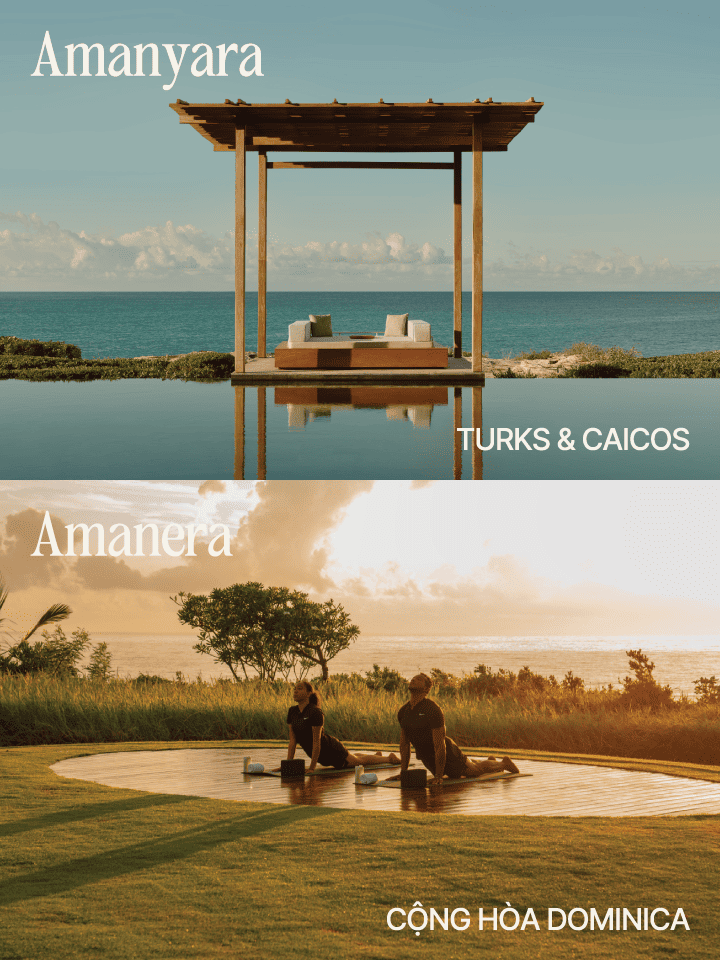
Amanera, Cộng hòa Dominica
Chương trình chăm sóc sức khỏe trong năm 2026 của Amanera tiếp tục tạo ra mối liên hệ với mẹ thiên nhiên, được dẫn dắt bởi truyền thống tín ngưỡng Shamanic của người Taínos. Thông qua trải nghiệm Elemental Body Awareness, các vị khách tham gia vào một chương trình chuyển động và hít thở đa giác quan lấy cảm hứng từ bốn yếu tố. Thông qua Pilates tiếp đất, ta kết nối với Thổ; thông qua dòng chảy Vinyasa Yoga, ta kết nối với Thủy; thông qua hơi thở tiếp thêm sinh lực, ta kết nối với Hỏa; và thông qua phương pháp chữa bệnh bằng âm thanh thiền định, chúng ta kết nối với Khí.
Amanera đang chào đón du khách đến với khóa điều dưỡng Ice Bath Recovery Retreat, do chuyên gia chăm sóc sức khỏe thường trú Jonathan Loyola hướng dẫn, cho đến hết tháng 5 năm 2026. Một hành trình kết hợp các phương pháp vận động cơ thể chậm rãi với các phương thức làm dịu cảm xúc, những người tham gia đạt được sự tiến bộ thông qua phương pháp thở, thiền định, ngâm mình trong nước đá và kết thúc bằng liệu pháp Watsu trong nước ấm.
Các phương pháp điều trị Myofascial Release góp phần hoàn thiện dịch vụ mới, sử dụng áp lực chậm, có mục tiêu cụ thể để giải phóng các sự co cứng mô liên kết và căng cơ, cải thiện khả năng vận động và thúc đẩy sự cân bằng trọn vẹn về thể chất và cảm xúc.
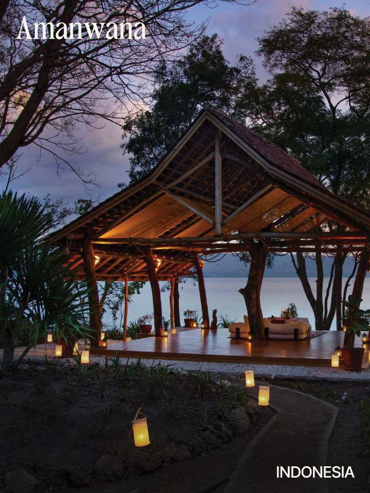
Amanwana, Indonesia
Luôn hòa hợp với nhịp điệu của thiên nhiên, Amanwana, khu lều trại biệt lập của thương hiệu trên đảo Moyo, mang đến trải nghiệm mới cho “thác Diana” đầy mê hoặc (thác Mata Jitu, nơi Vương phi Diana đã đến thăm vào năm 1993), chỉ cách khu nghỉ mát vài phút. Kết hợp giữa những rung động âm thanh êm dịu với khả năng thanh lọc của dòng nước chảy xiết, chuyên gia thỉnh giảng kiêm chuyên viên chữa lành (healer) người Java, Frendy Agung Dewanta, sẽ dẫn bước cho những buổi trị liệu; khi đó, trú khách được hướng dẫn cách nổi trên mặt nước, thư giãn sâu và tái thiết về thể chất.
Amanemu, Nhật Bản
Được bao quanh bởi cảnh quan rừng cây của Công viên Quốc gia Ise-Shima và nhìn ra vịnh Ago, Amanemu dựa trên truyền thống tắm thư giãn hàng thế kỷ của Nhật Bản, cùng với triết lý Mago Wa Yasashii (まごわやさしい) [một "thần chú" ăn uống lành mạnh của người Nhật, giúp ghi nhớ 7 nhóm thực phẩm thiết yếu hàng ngày, do TS. Yoshimura Hiroyuki khởi xướng], và khả năng chữa bệnh của onsen giàu khoáng chất. Du khách được mời đắm mình vào các nghi thức tắm trong hồ onsen riêng và chung của Amanemu, nơi các khoáng chất tự nhiên hỗ trợ tuần hoàn và giảm căng thẳng cơ bắp. Những trải nghiệm này hiện được bổ sung Watsu, một hình thức trị liệu cơ thể dưới nước một cách nhẹ nhàng và được thực hiện trong một hồ bơi riêng. Được hướng dẫn bởi một chuyên gia có chứng nhận, cơ thể nổi lên một cách dễ dàng trong khi việc thả lỏng, mát-xa và chuyển động nhịp nhàng làm dịu hệ thần kinh và khuyến khích thư giãn. Amanemu cũng cung cấp phương pháp thảo dược Kampo, dựa trên hệ thực vật truyền thống của Nhật Bản và các công thức có nguồn gốc từ thiên nhiên, được pha trộn một cách chuyên nghiệp và được sử dụng để hỗ trợ các mục tiêu sức khỏe cụ thể.
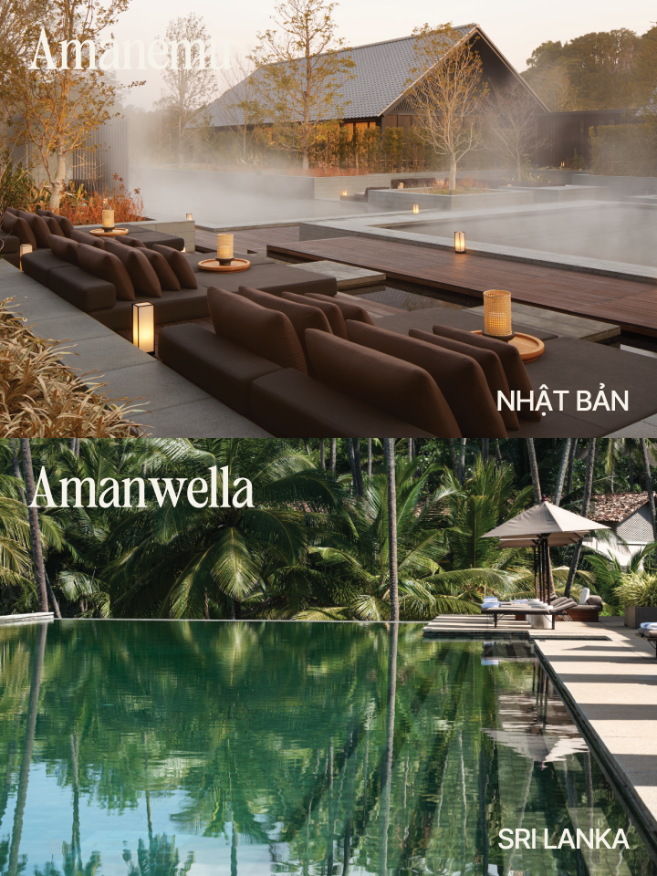
Amanwella, Sri Lanka
Trên bờ biển phía nam Sri Lanka, các nghi thức chăm sóc sức khỏe lấy cảm hứng từ đại dương của Amanwella nhằm mục đích mang lại sự liên kết và thư giãn sâu sắc. Là một nghi thức chữa lành bằng năng lượng cổ xưa giúp khôi phục sự hài hòa trong bảy Luân xa (Chakras) của cơ thể, trải nghiệm mới Chakra Balancing sử dụng chuông bát xoay Tây Tạng (Tibetan singing bowls), chuông chũm chọe Tingsha (Tingsha bells) và chuông gió ống tre Koshi (Koshi chimes) để giải phóng sự tắc nghẽn thông qua rung động nhiều lớp, hơi thở và chạm nhẹ. Du khách cũng có thể tham gia chương trình Restorative Wellness của khu nghỉ dưỡng, kéo dài trong ba hoặc năm ngày. Bắt đầu bằng tư vấn riêng, sau đó là các liệu pháp spa phù hợp trong 90 phút hàng ngày, “tắm” sóng âm và trà thảo dược Sri Lanka để hỗ trợ phục hồi tinh thần.
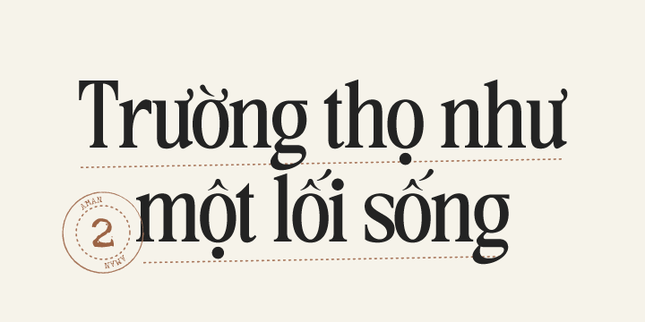
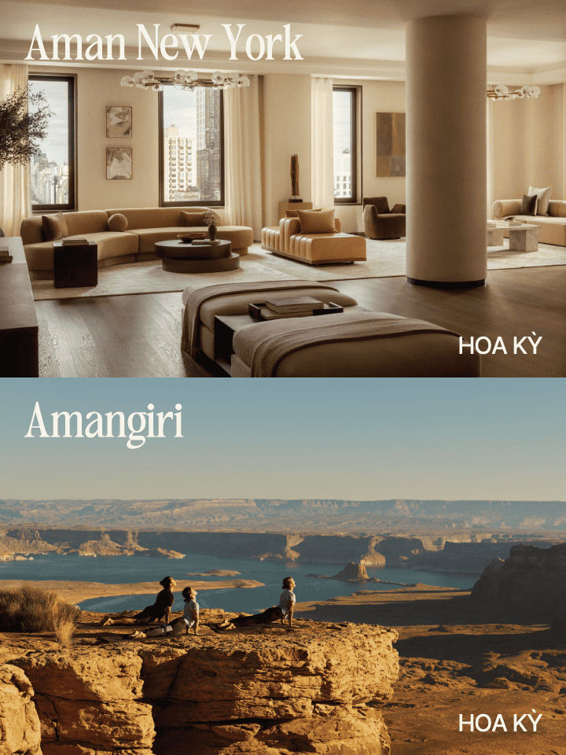
Aman New York, Hoa Kỳ
Aman Spa New York tiếp tục duy trì danh tiếng là thiên đường chăm sóc sức khỏe đô thị, với cơ sở vật chất nâng cao, bao gồm Private Contrast Therapy Suite mới, được thiết kế để tối ưu hóa khả năng phục hồi và hiệu suất. Liệu trình chăm sóc kết hợp chườm lạnh để kích thích tuần hoàn, xông hơi hồng ngoại để giải độc và chiếu sáng trị liệu bằng ánh sáng để nâng cao tinh thần minh mẫn. Phòng tắm hơi riêng liền kề tăng thêm độ ấm ẩm, bổ sung độ tương phản nhiệt để thúc đẩy sự cân bằng, khả năng phục hồi và sức bền. Tại sân hiên riêng tư ngoài trời, du khách có thể thoải mái sử dụng bể ngâm nước lạnh để thực hiện các nghi thức chăm sóc sức khỏe tiếp thêm sinh lực.
Amangiri, Hoa Kỳ
Được bao quanh bởi một vùng hoang dã nguyên sơ của sa mạc Utah, Amangiri mang đến một khóa tịnh tâm ba đêm mới, Longevity Powered by Nature, do tu sĩ Phật giáo Geshe Yong Dong (Geshe La) hướng dẫn. Kết hợp giữa Tibetan Magic Movement (Chuyển động Huyền thuật Tây Tạng, hay có thể hiểu là Yoga Tây Tạng) với hít thở, tụng kinh, chánh niệm, yoga và các liệu pháp spa, chương trình sẽ diễn ra từ ngày 7 đến 10 tháng 5 năm 2026, được thiết kế để đưa du khách hòa vào nhịp điệu của thiên nhiên, kết nối họ với cảnh quan và giúp họ khai thác sức mạnh phục hồi của thế giới khác bên trong/bao quanh họ.
Các buổi tập Aqua Wellness & Fitness tiếp tục nâng cao chất lượng dịch vụ của khu nghỉ dưỡng. Trong khi phương pháp Floatation Therapy and Cranial Floatation được tôn sùng của Amangiri hướng dẫn thân chủ hướng tới cảm giác không trọng lượng nội tại lâu dài, thì phương pháp AquaFit Board and Aqua Shiatsu, có sẵn từ tháng 5 đến tháng 10 năm 2026, giúp cải thiện sức mạnh, khả năng phối hợp và khả năng di chuyển hài hòa với đặc tính cảm quan của nước.
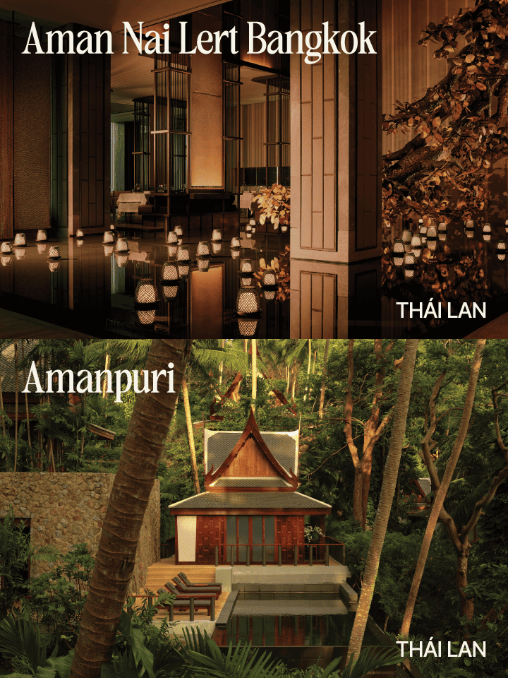
Aman Nai Lert Bangkok, Thái Lan
Trung tâm Aman Spa & Wellness rộng 1.500 mét vuông của Aman Nai Lert Bangkok trải rộng suốt ba tầng và thể hiện triết lý chăm sóc sức khỏe toàn diện của Aman trong khung cảnh đô thị.
“Trái tim” của trung tâm là Banya Spa House, địa điểm đầu tiên thuộc loại hình này trong thành phố, có phòng xông hơi khô ốp gỗ truyền thống, phòng xông hơi ướt với vòi sen Vichy, phòng trị liệu đôi, bể ngâm nước nóng và lạnh, cũng như sảnh rộng rãi mở ra sân hiên riêng. Được thiết kế cho các liệu trình chăm sóc sức khỏe nửa ngày hoặc cả ngày, Banya Spa House có thể được đặt riêng cho tối đa hai khách và bao gồm một loạt các liệu pháp trị liệu, ẩm thực bổ dưỡng và trị liệu Banya do chuyên gia trị liệu hướng dẫn.
Ở những nơi khác, những người đang tìm kiếm hành trình chăm sóc sức khỏe của riêng mình có thể chọn lưu trú tại Aman Suite. Chiếm toàn bộ tầng 18 của khách sạn, Aman Suite có tầm nhìn mê hoặc bao quát khắp Bangkok, có 1 hoặc 3 phòng ngủ và spa riêng với bể ngâm nước nóng và lạnh, phòng xông hơi khô và phòng xông hơi ướt.
Amanpuri, Thái Lan
Stem Cell Therapy hiện đã được cung cấp tại Medical Wellness Centre, trung tâm chăm sóc sức khỏe tích hợp đạt chuẩn y tế cao cấp, nằm trong khuôn viên khu nghỉ dưỡng Amanpuri ở Phuket. Phối hợp với Thanyapura, một trong những cơ sở y tế uy tín nhất trên đảo, du khách đến với Amanpuri có thể được hỗ trợ quá trình tái tạo tự nhiên của cơ thể bằng cách giảm viêm và tăng cường tuổi thọ. Trong quá trình này, UC-MSC (tế bào gốc trung mô từ dây rốn) có nguồn gốc hợp pháp sẽ được tiêm vào tĩnh mạch sau khi khách hàng được tư vấn cá nhân hóa và xét nghiệm máu cần thiết.
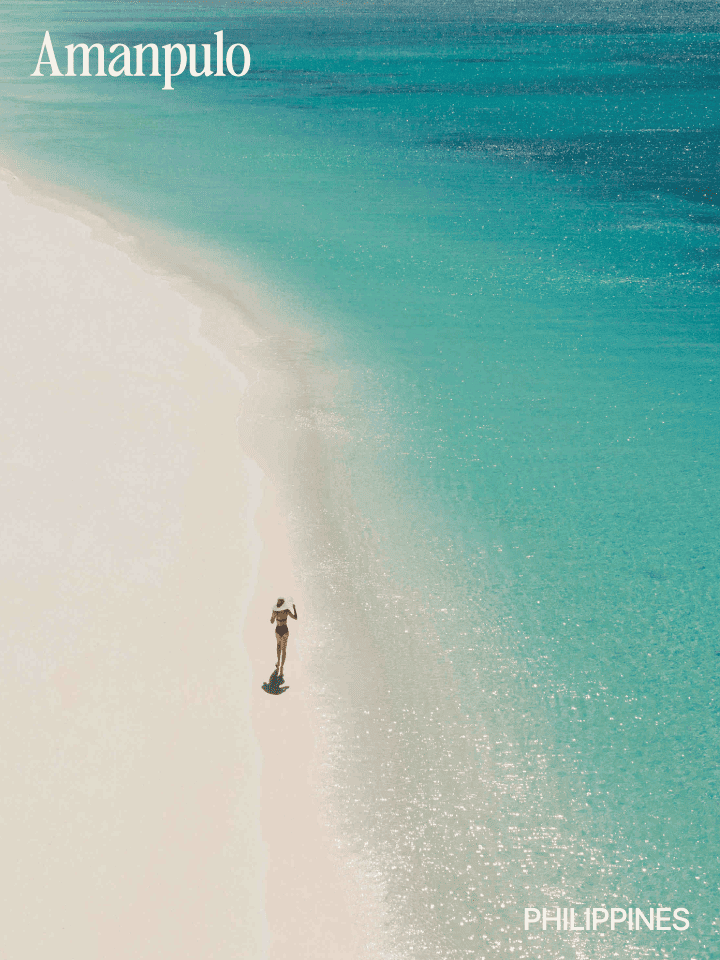
Amanpulo, Philippines
Là một hòn đảo tư nhân thanh bình, thiên đường nhiệt đới Amanpulo chào đón năm 2026 với một loạt cải tiến và phương pháp điều trị mới được thiết kế để hỗ trợ trẻ hóa toàn diện. Aman Spa trên đỉnh đồi giới thiệu những không gian mới, bao gồm Weights and Strength Studio và Pilates Reformer Studio, với hai phòng riêng để rèn luyện cá nhân. Đối với những người muốn thư giãn cao độ, các dãy phòng xông hơi ướt riêng tư của spa hiện có vòi sen phun tia, đồng thời tùy chọn Infra-Red Therapy cũng có thể được thêm vào để thúc đẩy quá trình phục hồi cơ bắp.
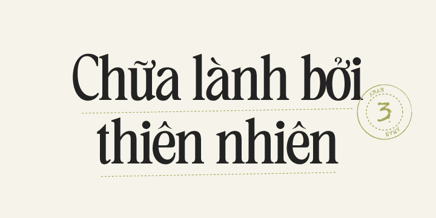
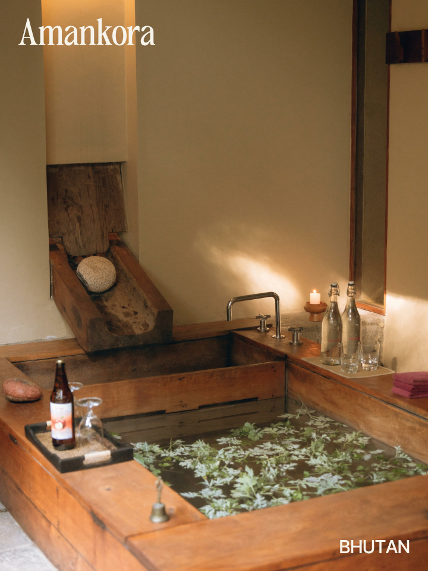
Amankora, Bhutan
Với các nhà nghỉ tản mác tại năm thung lũng của Bhutan, Amankora mang đến trải nghiệm chăm sóc sức khỏe tinh thần dựa trên cảnh quan rộng lớn và đa dạng của vương quốc. Tiếp tục duy trì “khoảng cách” này vào năm 2026, Amankora Paro mở thêm Hammam Spa House, cung cấp một nơi trú ẩn hoàn toàn riêng tư để trải nghiệm không khí trong lành xung quanh. Hammam Spa House có phòng trị liệu đôi, phòng xông hơi ướt, bể ngâm nước lạnh, hồ bơi ngoài trời, bồn tắm nước nóng và phòng thư giãn. Cung cấp các liệu trình tắm hammam riêng biệt kết hợp tẩy tế bào chết toàn thân, xà phòng thơm và mát-xa tiếp thêm sinh lực, cùng lựa chọn Hammam Treatment kéo dài trong 90 phút, ngâm mình nửa ngày bao gồm mát-xa toàn thân và bữa trưa bổ dưỡng, hoặc Spa House Upgrade cũng là một gợi ý tốt để mở rộng các tiện nghi.
Một dịch vụ mới khác tại Amankora Paro là Iglu Sauna, một phòng tắm hơi ven sông nổi bật được xây dựng từ vật liệu tự nhiên và lấy cảm hứng từ truyền thống tắm banya của Đông Âu và Scandinavia. Cửa kính kịch trần đóng khung quan cảnh rừng cây và tu viện, trong khi các chuyên gia trị liệu thực hiện các nghi lễ truyền thống bằng cách sử dụng các bó venik bằng gỗ sồi hoặc bạch dương để kích thích tuần hoàn, tẩy tế bào chết cho da và phục hồi sức sống cho cơ thể. Các trải nghiệm bao gồm lựa chọn trị liệu riêng trong 60 hoặc 90 phút, tắm tương phản nóng lạnh và dành thời gian thư giãn ngoài trời kèm theo đồ uống giải khát nhẹ.
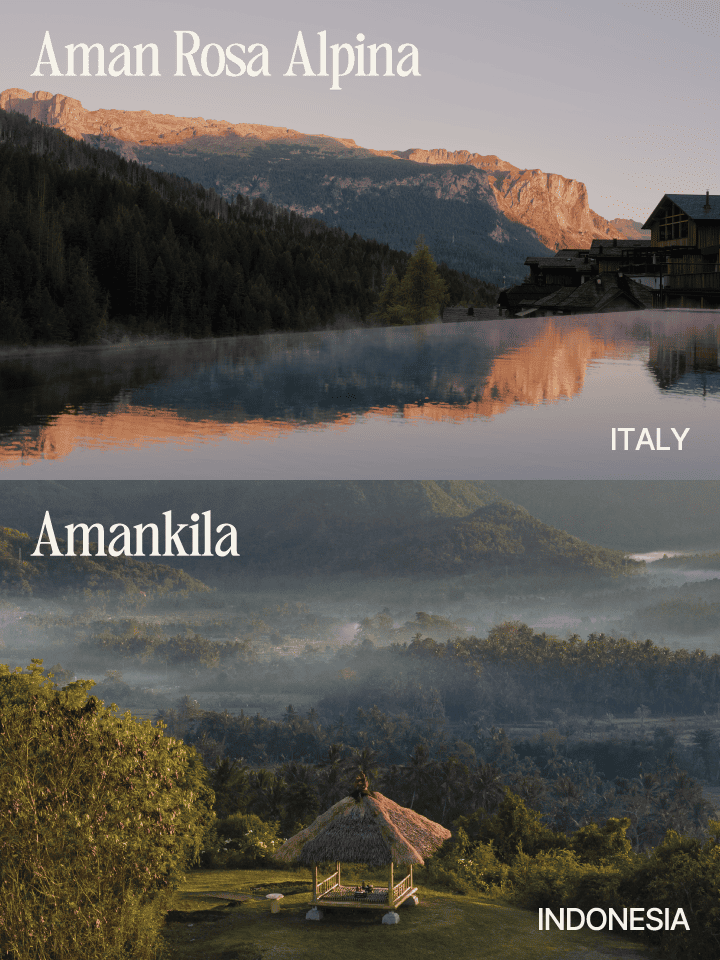
Aman Rosa Alpina, Italy
Dựa trên bối cảnh đầy mê hoặc ở Dolomites, nơi được UNESCO bảo vệ, dịch vụ chăm sóc sức khỏe của Aman Rosa Alpina được thiết kế để song hành với chương trình phiêu lưu ngoài trời đầy kích thích của khu nghỉ mát. Các phương pháp điều trị đặc trưng tại Aman Spa mới khai trương, bao gồm Alpine Muscle Relief Massage, khai thác lợi ích chống viêm của cây kim sa (arnica) bản địa, pha trộn với tinh dầu hoa dại và hoa oải hương để giảm căng cơ, cải thiện tuần hoàn và thúc đẩy thư giãn sâu. Trong khi đó, Dolomites Spa Journey mang đến trải nghiệm toàn diện hơn, kéo dài bốn tiếng rưỡi, kết hợp một buổi huấn luyện riêng được cá nhân hóa, tẩy da khô, mát-xa trị liệu và chăm sóc da mặt lão hóa.
Amankila, Indonesia
Kết hợp cả phục hồi thể chất và cân bằng cảm xúc, các dịch vụ chăm sóc sức khỏe của Amankila được thiết kế để mang lại cảm giác sảng khoái và đổi mới. Trong khi liệu pháp massage mới Body Contour định hình và tạo sắc thái theo nhịp điệu của kỹ thuật massage chuyên sâu Brazilian Lymphatic Drainage (Dẫn lưu bạch huyết kiểu Brazil), các buổi Sound Healing sẽ thúc đẩy sự cân bằng bên trong, giải phóng căng thẳng và xoa dịu thông qua những rung động nhẹ nhàng. Các buổi tập Tai Chi Shibasi Qi Gong cũng được tổ chức để nâng cao chương trình của khu nghỉ dưỡng, nuôi dưỡng năng lượng, sự cân bằng và dòng chảy tâm-thân-trí.
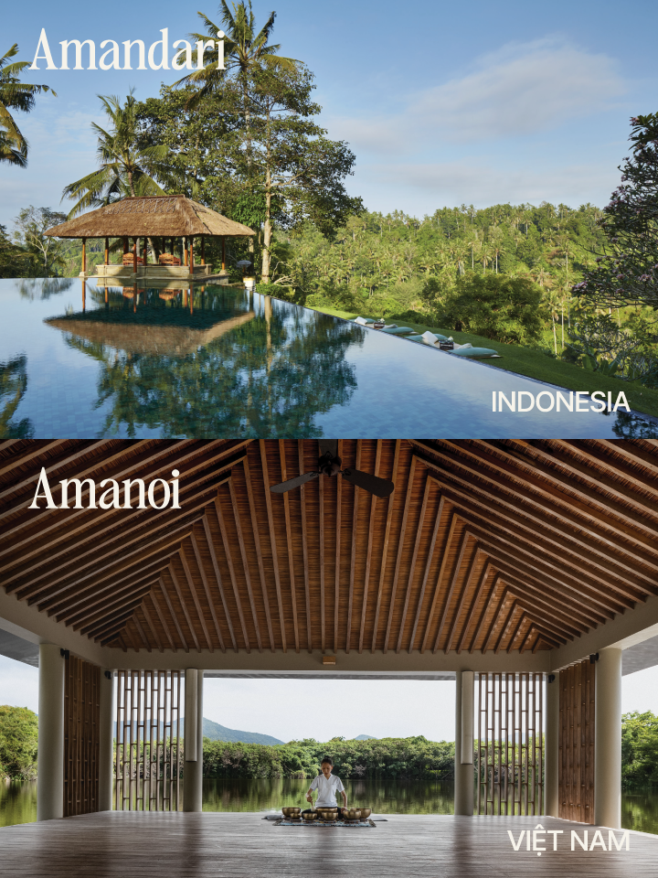
Amandari, Indonesia
Giữa những thửa ruộng bậc thang uốn lượn của Ubud, Amandari mang đến một khu nghỉ mát phục hồi năng lượng với những bổ sung mới trong năm tới. Cho đến hết tháng 4 năm 2026, chuyên gia thỉnh giảng Thea Eve sẽ giới thiệu kinh nghiệm hàng thập kỷ của mình về hít thở và nhận thức cơ thể trong các buổi Healing Rhythm, được thiết kế để đưa cơ thể và tâm trí trở lại sự hài hòa tự nhiên, khôi phục chức năng hô hấp tối ưu và cân bằng lại hệ thần kinh tự chủ (ANS). Quanh năm, du khách cũng sẽ được mời trải nghiệm một phương pháp trị liệu mới và độc đáo, Singing Bowl Massage, nơi những chiếc chuông bát ấm nóng chứa đầy nước được đặt lên cơ thể và di chuyển theo các động tác massage chậm rãi, trôi chảy để làm tan căng thẳng và khuyến khích cảm giác giải tỏa tự nhiên.
Amanoi, Việt Nam
Từ ngôi nhà ngoạn mục trên bờ biển phía đông nam của Việt Nam, Amanoi và Vườn Quốc gia Núi Chúa bao quanh mang đến khung cảnh hoàn hảo cho khoảng thời gian ngơi nghỉ yên bình. Được thiết kế để giúp du khách hòa hợp với nhịp điệu của thiên nhiên, Restore Circadian Rhythm Retreat được giới thiệu với khả năng hỗ trợ giấc ngủ sâu hơn, yên tĩnh hơn thông qua thủy trị liệu, trị liệu cơ thể, chuyển động chánh niệm và thư giãn bằng âm thanh để làm dịu hệ thần kinh và khôi phục lại sự cân bằng.
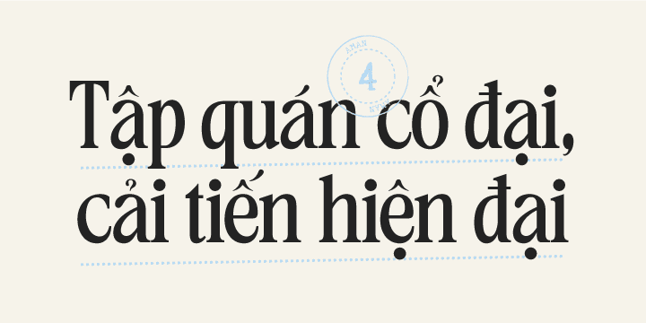
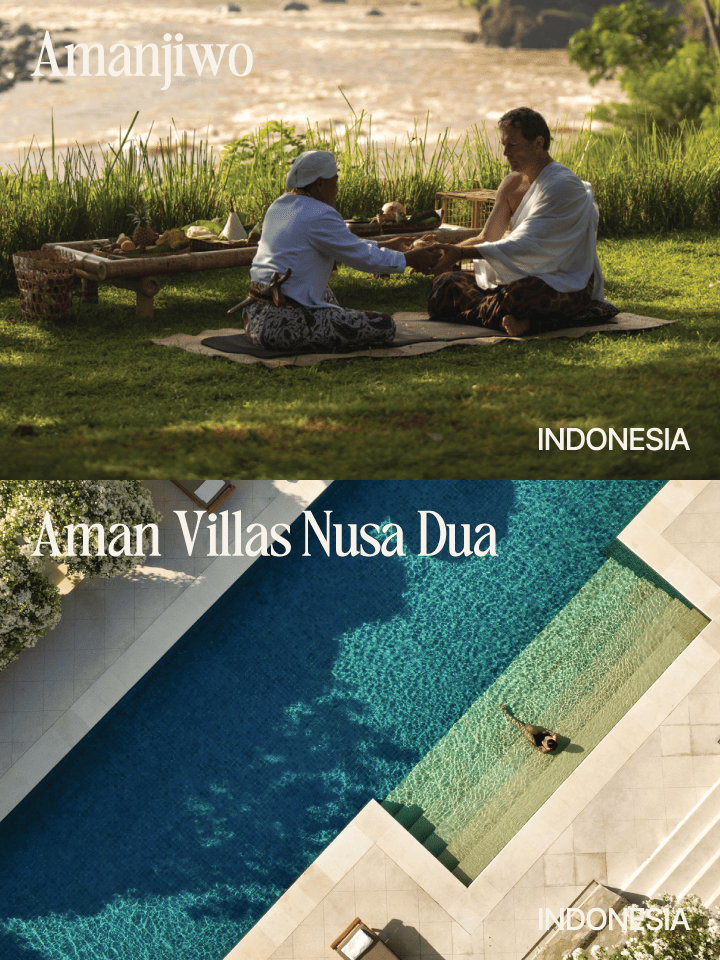
Amanjiwo, Indonesia
Với cách tiếp cận sức khỏe mang tính tâm linh như bối cảnh của chính nơi này, năm 2026 của Amanjiwo tập trung vào truyền thống chữa bệnh của địa phương. Được thực hiện bởi Bu Warti, một nhà chữa lành (healer) bản địa được kính trọng, liệu pháp mát-xa mô sâu (deep-tissue massage) truyền thống đã được đổi mới gọi là Urut by Dukun Pijat sẽ nâng cao các lựa chọn trị liệu của khu nghỉ dưỡng. Liệu pháp này kết hợp kéo giãn, kích thích điểm mô và thao tác cơ thể, nhắm vào cả sự căng cơ và dòng năng lượng của cơ thể (aliran tenaga dalam). Tập tục hàng thế kỷ này cũng thể hiện triết lý của người Java về urip iku urup (cuộc sống vốn dĩ là một hành trình thắp sáng cho người khác) tích hợp các phương pháp tiếp cận thể chất và cảm xúc.
Aman Villas Nusa Dua, Indonesia
Trong sự thoải mái và riêng tư tại các biệt thự của Aman ở Nusa Dua, Bali, trải nghiệm mới Healing Power of Reiki mang đến một lộ trình phục hồi toàn diện. Thông qua việc truyền năng lượng cẩn thận, chuyên gia thỉnh giảng Made Warmana sẽ đưa du khách tiến vào trạng thái thư giãn sâu, tăng cường quá trình chữa lành tự nhiên của cơ thể. Khả năng nắm vững các tập quán truyền thống hàng thập kỷ của người Bali giúp Warmana đem đến cho thân chủ cảm giác giải tỏa đến tận cùng, một trải nghiệm vừa xúc động sâu sắc, vừa mang đậm dấu ấn văn hóa.
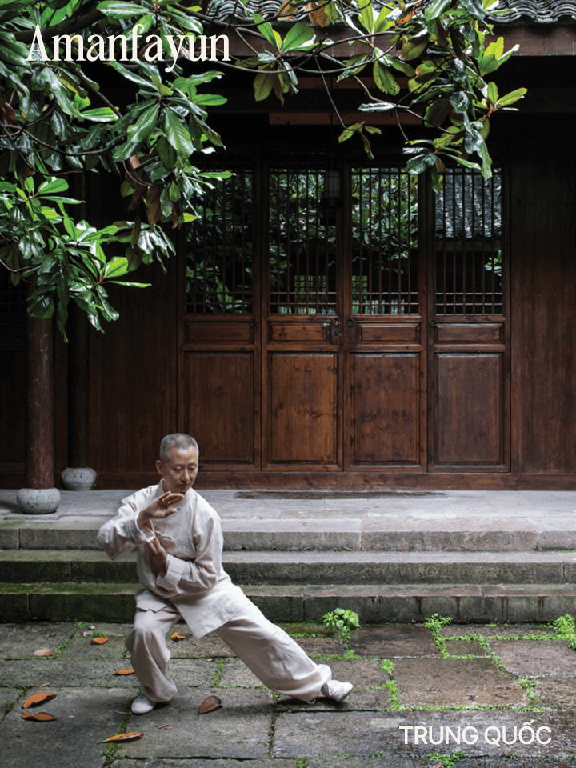
Amanfayun, Trung Quốc
Dựa trên nền tảng y học cổ truyền Trung Quốc, Amanfayun giới thiệu loạt lựa chọn chăm sóc sức khỏe theo mùa cho năm 2026 – một chương trình điều trị mới được thiết kế để phản ánh nhịp điệu mùa của Hàng Châu. Trong khi mùa xuân tập trung vào sức khỏe của gan, thì mùa hè nuôi dưỡng trái tim bằng cách cạo lưng và dùng máy xông ngải cứu biện thạch cầm tay (hand Bianstone moxibustion), một liệu pháp y học cổ truyền Trung Quốc. Mùa thu hỗ trợ chức năng phổi bằng cách hướng dẫn các liệu pháp thở, và mùa đông củng cố thận thông qua các phương pháp vận dụng áp lực tập trung vào kinh mạch.
Đối với những người đang tìm kiếm trải nghiệm êm đềm hơn, dịch vụ Wood Soaking Baths mời gọi du khách thư giãn trong làn nước ấm pha với các loại thực vật địa phương như trà xanh Long Tỉnh, ngải cứu và cây thùa, tăng cường kết cấu da và thúc đẩy sự tĩnh tại bên trong. Ngoài ra, các buổi Sound Bath thúc đẩy sự thư giãn sâu sắc và cân bằng cảm xúc thông qua chuông bát xoay, cồng chiêng, handpand (trống chảo kim loại vỗ bằng tay) và ocean drums (trống mô phỏng âm thanh đại dương), dẫn dắt bởi Xi Lei, một chuyên gia thiền định và healer có chứng nhận của Nepal.
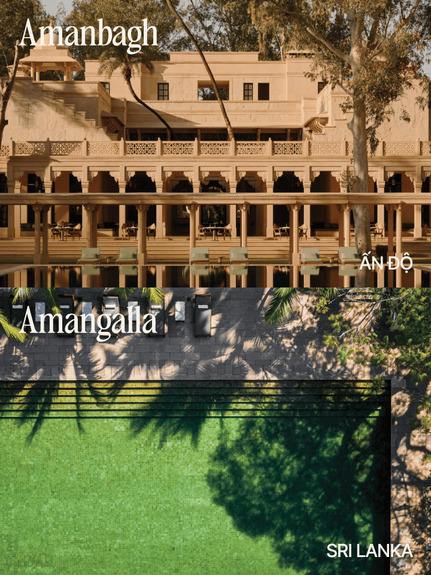
Amanbagh, Ấn Độ
Tại Amanbagh, ở vùng nông thôn trung tâm bang Rajasthan, trí tuệ Ayurvedic (Y học cổ truyền Ấn Độ) là nền tảng cho một loạt chương trình hòa nhập mang tính chuyển hóa. Chương trình Detox & Cleansing (Panchakarma) Intensive Immersion kéo dài 14 đêm trở lên, kết hợp yoga, các phương pháp điều trị cá nhân hóa và panchakarma, phương pháp detox Ayurvedic tối ưu, tất cả nhằm loại bỏ độc tố ẩn sâu trong cơ thể và khôi phục lại sự cân bằng. Được thiết kế để giải quyết các tình trạng như mệt mỏi, lo lắng và mất cân bằng tiêu hóa, chương trình được hướng dẫn bởi các bác sĩ Ayurvedic nội trú và được cá nhân hóa cho từng thân chủ. Tương tự, chương trình Balance & Vitality Intensive Immersion, được cung cấp trong bảy đêm, hỗ trợ năng lượng, khả năng phục hồi và cân bằng cảm xúc, chống lại tác động của căng thẳng hiện đại thông qua các phương pháp điều trị có mục tiêu và thực hành chánh niệm trong một khoảng thời gian ngắn hơn.
Amangalla, Sri Lanka
Nằm trong khuôn viên của di sản thế giới được UNESCO công nhận – pháo đài Galle, ở vùng vịnh tây nam Sri Lanka, Amangalla tiếp tục tôn vinh truyền thống chữa bệnh cổ xưa của Sri Lanka với các nghi lễ Ayurvedic cao siêu [thực hành chăm sóc sức khỏe theo trí tuệ y học cổ truyền Ấn Độ]. Kết hợp liệu pháp mát-xa bột thảo dược Udvarthana tiếp thêm sinh lực để kích thích tuần hoàn, và giải độc với liệu pháp mát-xa dầu Abhyanga làm dịu sâu để nuôi dưỡng làn da và cân bằng lại năng lượng quan trọng, trải nghiệm Ayurvedic Renewal sẽ dẫn dắt du khách đạt đến trạng thái thanh thản sâu lắng.
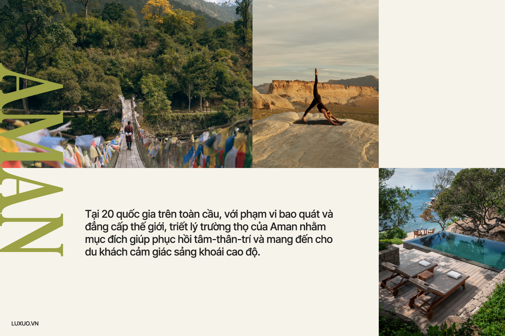